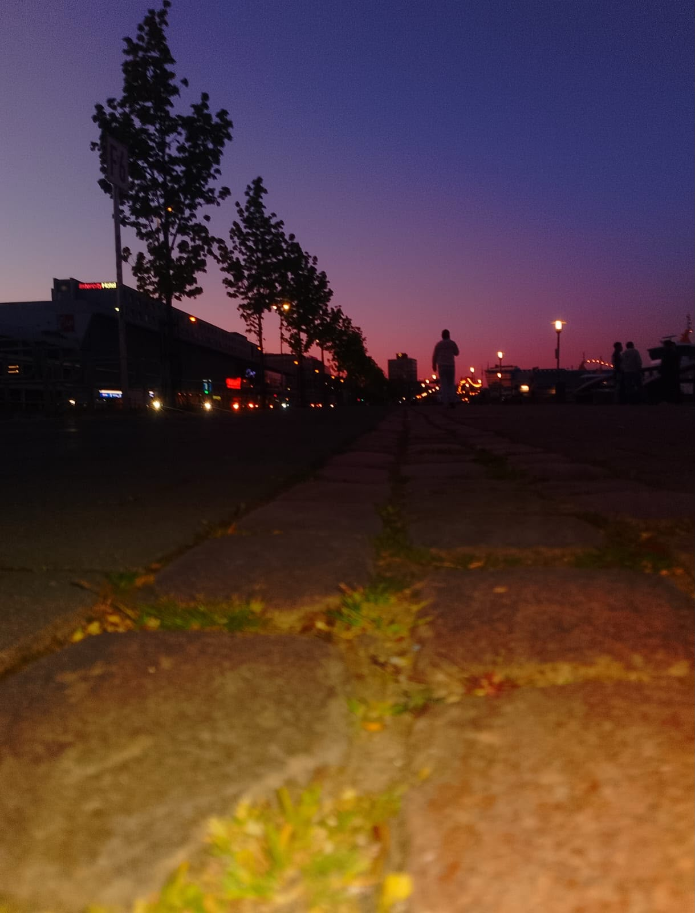

Willkommen auf meinem Portfolio
Schüler des Beruflichen Gymnasiums (BGT25b) – Jahrgang 2026 / 2027
Über mich
Hallo! Ich bin Leon Wyppych. Auf dieser Website dokumentiere ich meine schulischen Leistungen, IT- und Medientechnik-Projekte sowie meine Erfahrungen aus Praktika und Hobbys.
Meine Schwerpunkte
- Berufliche Informatik: Netzwerke, Systemarchitektur & Elektrotechnik
- Medientechnik: Live-Broadcasting, Signalverarbeitung & Bildbearbeitung mit Photoshop
- Webentwicklung: HTML5, CSS3 & responsive Design